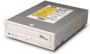

| Ќакопители на компакт-дисках CD-ROM (Compact Disk Read Only Memory) сейчас используютс€ как стандартное средство дл€ распространени€ программного обеспечени€, €вл€ютс€ стандартным устройством персонального компьютера. |  |
Х ѕривод
устанавливаетс€ в отсек дисковода 5,25".
Х »нтерфейс
привода Ч EIDE или SCSI.
Х ѕривод
имеет собственную кэш-пам€ть от 64 до 256 байт.
Х —корость
передачи данных Ч кратна 150 байт/с: 2х Ц 300 байт/с, 8х Ц 1,2 ћбайт/с,
40х Ц 6 ћбайт/с.
Х —корость
доступа Ч 150...400 мс.
Х —читывание
информации производитс€ с посто€нной линейной скоростью. ѕоэтому углова€
скорость вращени€ Ц переменна€ на внутренних и наружных секторах.
омпакт-диск имеет одну физическую дорожку в виде непрерывной спирали. ƒорожка начинаетс€ на внутреннем диаметре диска, закинчиваетс€ на наружном. ƒиаметр диска Ч 5,25". ѕоверхность дорожки представл€ет собой чередование отражающих и рассеивающих точек. —читывание информации в двоичном виде производитс€ лазером с фотоприемником. ћаксимальна€ емкость диска Ч 650 ћбайт.
ѕризводители
устройств Ч Sony, Panasonic, Pioneer, Creative, Mitsumi, NEC, Toshiba и
др.